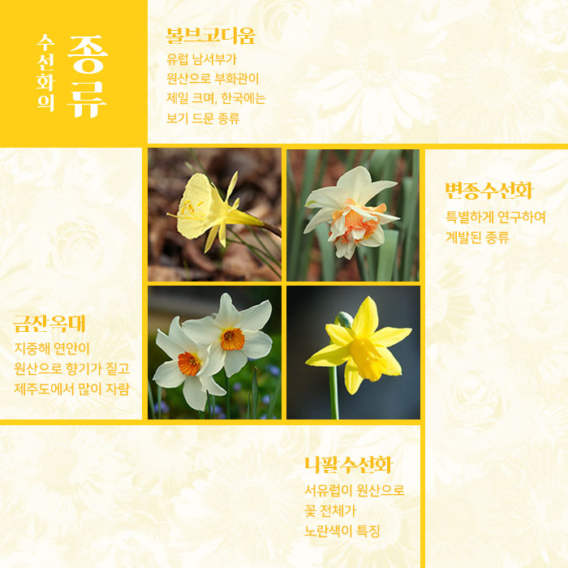
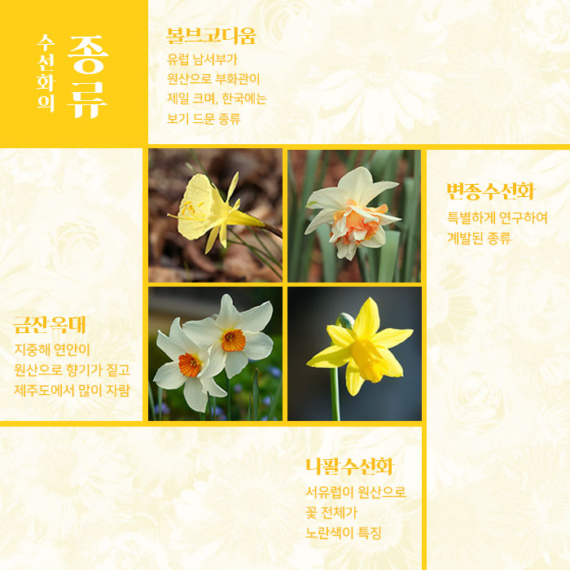

수선화 꽃 속에 작은 찻잔이 들었네!
나르키수스(Narcissus)
개화시기 : 1~4월에 꽃이 핌
다른이름 : 금잔은대, 금잔옥대, 설중화
꽃말 : 자기애, 자존심, 자아도취
1월의 탄생화
‘수선화’
울타리 밑 볕 바른 곳 옹기종기 모여 있는 햇병아리들 수선은 노오란 입술을 열고 삐약삐약 귓가에 날아든 소리
병아리일까? 수선일까? 가만가만 두 손 모두어 손 속에 소복하게 담고 싶어라 작은 병아리 귀여운 수선
수선화 여러해살이 구근식물
수선화는 이른 봄부터 짙은 향기와 아름다운 꽃을 피우는 구근식물이랍니다. 구근식물이란 잎이나 줄기, 뿌리에 영양분을 쌓아두어 이 부분이 둥글게 커져 마치 둥근 뿌리처럼 보이는 것을 말한답니다. 동그란 알처럼 생겼다고 알뿌리라고도 하고요 수선화도 알뿌리 식물입니다. 비늘잎이 겹겹이 쌓여 마치 양파처럼 보여요. 추위를 잘 견디고 병에 잘 걸리지 않아서 한번 심어 놓으면 매년 꽃을 피우는 여러해살이 식물이지요.
부화관 꽃속에 또 한송이
꽃 - 꽃은 대부분 흰색 또는 노란색으로 꽃 전체의 색이 하나이거나, 부화관의 색이 다른 꽃도 있다.
부화관 - 꽃잎 속에 또 하나의 꽃송이처럼 보인다. 색깔과 모양이 각양각색이다.
잎 - 늦가을에 자라기 시작하며 부추처럼 길쭉한 줄 모양이다.
뿌리 - 비늘줄기는 땅속줄기의 일종이다 비늘잎의 크기가 커지면서 양파처럼 여러 개의 잎이 겹쳐 줄기를 이룬다.
< 꽁꽁 얼어붙은 땅에도 피는 1월의 탄생화, 수선화 >
수선화는 수선이라는 이름처럼 물가에 피는 꽃입니다. 축축한 땅을 좋아하지요. 제주도에서는 하얀 눈 속에서도 핀다고 설중화라 부릅니다. 추위에 강한 수선화는 <1월의 탄생화>랍니다
이번 달을 대표하는 꽃은?
1월 - 수선화 히아신스 제비꽃
2월 - 물망초
3월 - 수레국화
4월 - 금잔화
5월 - 민들레
6월 - 장미
7월 - 금어초
8월 - 토끼풀
9월 - 용담
10월 - 국화
11월 - 루피너스
12월 - 박하
수선화의 종류
볼브코디움 - 유럽 남서부가 원산으로 부화관이 제일 크며, 한국에는 보기 드문 종류.
변종수선화 - 특별하게 연구하여 계발된 종류.
금잔옥대 - 지중해 연안이 원산으로 향기가 짙고 제주도에서 많이 자람.
나팔수선화 - 서유럽이 원산으로 꽃 전체가 노란색이 특징.
나르시스의 전설 수선화 꽃말과
수선화의 속명 나르키수스는 그리스 신화 속 인물, 나르시스 에서 시작되었 습니다.